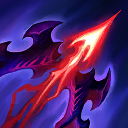

核心裝備
 殞落王者之劍
殞落王者之劍 鬼索的狂暴之刃
鬼索的狂暴之刃 臨界點
臨界點 芮蘭颶風箭
芮蘭颶風箭 中婭沙漏
中婭沙漏

以下為本站 7.2d 校正後的標準配置；實戰仍需依敵方陣容調整。


技能優先：Q > W > E
參與擊殺後暫時提高攻速；擊殺或助攻敵方英雄時，獲得的攻速提升幅度更高。

蓄力後射出遠距穿透箭矢，蓄力越久距離與傷害越高；可觸發並消耗目標身上的荒蕪層數。
普攻附加魔法傷害並疊加荒蕪，其他技能可引爆層數造成依目標最大生命計算的魔法傷害；主動使用會強化下一發破甲箭。
在指定區域降下箭雨，造成物理傷害、緩速與重創效果，並可引爆命中目標身上的荒蕪。
射出腐敗藤蔓禁錮第一名命中的敵方英雄，並向附近未受影響的英雄擴散。
普攻第一層 → 普攻第二層 → 普攻第三層 → 2技強化下一箭 → 1技蓄力引爆
疊滿三層後啟動二技並蓄力一技，可同時引爆荒蕪與強化箭矢；對手有位移時不必蓄到最滿，優先確保命中。
4技禁錮 → 普攻疊層 → 普攻疊層 → 普攻三層 → 3技引爆與重創 → 1技補傷害
大絕命中後利用禁錮時間疊滿荒蕪，三技先引爆並限制回血，再用一技處理撤退目標。
普攻疊荒蕪 → 持續輸出 → 3技引爆 → 重新疊層 → 持續普攻 → 1技再次引爆
長時間團戰不要一次交光所有技能；在每次技能引爆後重新疊層，交替使用三技與一技維持最高百分比傷害效率。
用普攻在敵方英雄身上累積荒蕪層數，再以破甲箭或腐敗箭雨引爆，才是法洛士完整的換血方式。不要只在遠處空放蓄力箭消耗魔力；敵人準備貼近時，腐敗箭雨的緩速與重創區域要留作拉開距離。
殞落王者之劍、鬼索與臨界點完成後，攻速、命中特效與雙穿讓持續輸出進入強勢期。物件團可用墮落連鎖先手鎖住關鍵目標，也能反手阻止突進；控制命中後先疊荒蕪，再用技能連續引爆百分比傷害。
法洛士沒有位移，站位應以能安全普攻前排為優先。面對高生命坦克時不必冒險繞後，荒蕪引爆與裝備特效就能有效處理；大絕若無法命中後排，也可以鎖住前排並利用擴散效果切割敵方陣形。
對局名單是本站依英雄機制與目前配置整理的參考，不等同固定勝率。
先照標準出裝與符文走；只有敵方陣容真的形成威脅時，再替換必要格子。
觸發：敵方至少有 2 名高生命／高護甲前排，而且團戰多數時間必須先處理前排。
標準配置已經有足夠打坦能力；如果已有斷切、百分比穿透或殞落，就不要為了「坦克多」硬拆暴擊／攻速核心。
觸發：敵方有多名能直接貼到後排的刺客／爆發英雄，或你常在開始輸出前就被秒。
守護天使提供物防與復活，適合把最後一個純輸出位換成容錯。
魔提斯深淵提供魔防與低血量魔法護盾，比單純增加輸出更能保住進場或持續輸出。
觸發：敵方有多個硬控，而且控制鏈會讓你直接失去輸出時間。
先購買水銀飾帶取得主動解控，之後再合成水星彎刀；水銀飾帶是合成組件，不是另一件要與水星彎刀互換的成裝。
犧牲部分輸出型傳奇符文，換取韌性與緩速抗性。
提醒：水星彎刀的路線是先購買水銀飾帶，再完成水星彎刀；水銀飾帶不是另一件終局成裝。
觸發：敵方有多名高治療／高吸血英雄，或核心前排能在團戰中大量回血。
致死宣告兼顧暴擊、穿透與重創，適合射手在不拆核心輸出邏輯下補反治療。
觸發：敵方有多個大量護盾來源，而且己方沒有其他更適合負責反護盾的英雄。
巨蛇鋒牙降低敵方護盾，只有護盾真的成為團戰主要問題時才值得犧牲一般輸出位。
提醒：反護盾裝通常是彈性位，不要只因敵方有一個小護盾就固定購買。
7.2a 飛龍路第二批正式攻略：英雄定位、技能名稱與核心機制依 Riot Games 台灣《激鬥峽谷》7.2a 更新公告及官方英雄頁校正；出裝、符文、召喚師技能、技能順序與對局方向交叉參考 WildRiftFire Patch 7.2a 後整合。Tier 維持本站既有飛龍路評級。｜v66：套用吉茵珂絲 v64 固定母版，完成好運姐、婕莉、艾希、法洛士、伊澤瑞爾、希維爾。｜v76 第二階段：新增 3 位合適輔助與搭配理由，並完成攻略內容欄位驗收。
本站於 2026-08-27 依 Patch 7.2d 重新檢查此配置。 Tier、出裝、符文與對局屬於 Wild Rift Guide 的整理與分析，不是 Riot Games 官方推薦；版本改動後會再依官方公告與實戰資料校正。